Simulación de cobertura con opciones¶
Importar datos.¶
datos = read.csv("TRM diaria febrero 2020.csv", sep = ";", dec = ",")
head(datos)
| Fecha | TRM | |
|---|---|---|
| <fct> | <dbl> | |
| 1 | 20/04/2018 | 2724.47 |
| 2 | 23/04/2018 | 2757.96 |
| 3 | 24/04/2018 | 2799.45 |
| 4 | 25/04/2018 | 2785.22 |
| 5 | 26/04/2018 | 2820.29 |
| 6 | 27/04/2018 | 2812.83 |
Vector de precios.¶
precios = datos[,2]
precios = ts(precios)
Rendimientos continuos¶
rendimientos = diff(log(precios))

{kind=link}
\(S_0:\)¶
s = tail(precios,1)
s = as.numeric(s)
s
\(\mu:\) Rendimiento esperado¶
mu = mean(rendimientos) #diario
mu
\(\sigma:\)Volatilidad¶
volatilidad = sd(rendimientos) #diaria
volatilidad
Estrategias de cobertura con opciones financieras¶
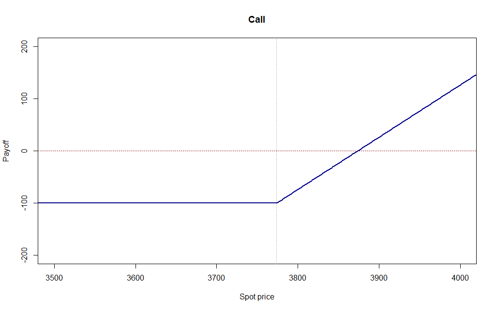
Call¶
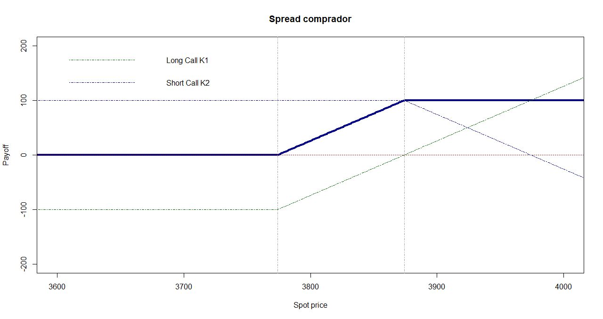
Spread Comprador¶
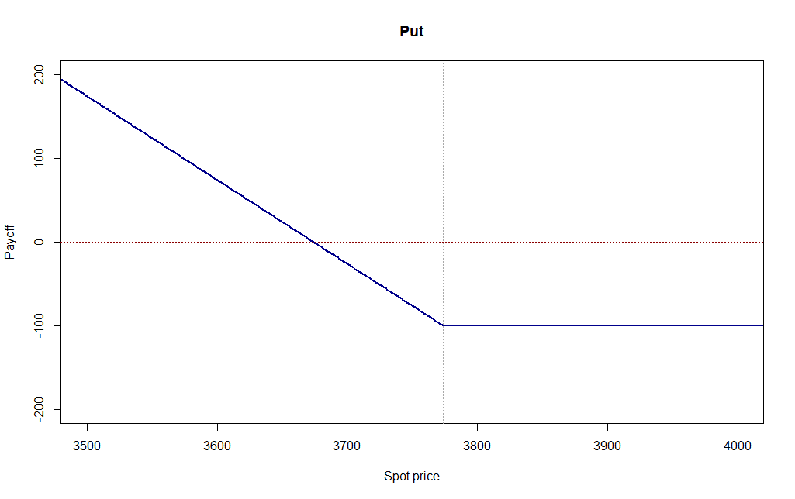
Put¶
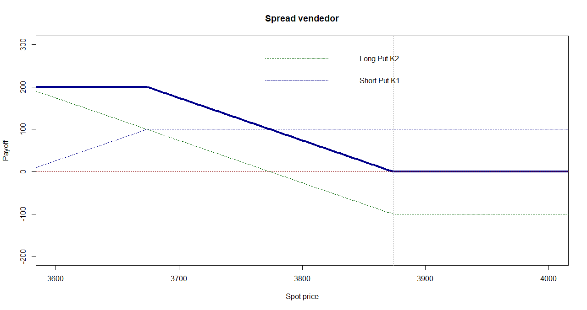
Spread Vendedor¶
Valoración de una opción europea sobre divisas con vencimiento a un mes.¶
Estrategias de cobertura para compradores:
Call:
\[PrecioCobertura = |-S_T + máx[S_T - K_1,0] - primaCall_1|\]
Spread:
\[PrecioCobertura = |-S_T + máx[S_T - K_1,0] - primaCall_1 + mín[K_2 - S_T,0] + primaCall_2|\]
Estrategias de cobertura para vendedores:
Put:
\[PrecioCobertura = S_T + máx[K_1 - S_T,0] - primaPut_1\]
Spread:
\[PrecioCobertura = S_T + mín[S_T - K_1,0] + primaPut_1 + máx[K_2 - S_T,0] - primaPut_2\]
\(K_1 = 3.400\).
\(K_2 = 3.450\).
k1 = 3400
k2 = 3450
# Tasas libres de riesgo
r = 0.018 # E.A. (Colombia)
rf = 0.003 # Nominal (USA)
# Con el modelo Black-Scholes se trabaja con tasas continuas:
r = log(1+r) # C.C.A.
rf = log(1+rf/12)*12 # C.C.A.
T = 30 # 1 mes
dt = 1 # saltos diarios
iteraciones = 10000
set.seed(1) # Valor semilla para la simulación. Con esto siempre se obtendrá el mismo valor.
# Simulación del precio del activo subyacente con un mundo neutral al riesgo
st_prima = matrix(, iteraciones, T+1)
st_prima[,1] = s
for(i in 1:iteraciones){
for(j in 2:(T+1)){
st_prima[i,j] = st_prima[i,j-1]*exp((r/360-rf/360-volatilidad^2/2)*dt+volatilidad*sqrt(dt)*rnorm(1))
}
}
compensacionesCall1 = vector()
compensacionesCall2 = vector()
compensacionesPut1 = vector()
compensacionesPut2 = vector()
for(i in 1:iteraciones){
compensacionesCall1[i] = max(st_prima[i,T+1]-k1,0)*exp(-(r-rf)*1/12)
compensacionesCall2[i] = max(st_prima[i,T+1]-k2,0)*exp(-(r-rf)*1/12)
compensacionesPut1[i] = max(k1-st_prima[i,T+1],0)*exp(-(r-rf)*1/12)
compensacionesPut2[i] = max(k2-st_prima[i,T+1],0)*exp(-(r-rf)*1/12)
}
primaCall1 = mean(compensacionesCall1)
primaCall1
primaCall2 = mean(compensacionesCall2)
primaCall2
primaPut1 = mean(compensacionesPut1)
primaPut1
primaPut2 = mean(compensacionesPut2)
primaPut2
Simulación de coberturas con opciones europeas¶
# Simulación del precio del activo subyacente con riesgo, se utiliza el rendimiento esperado.
st = matrix(, iteraciones, T+1)
st[,1] = s
for(i in 1:iteraciones){
for(j in 2:(T+1)){
st[i,j] = st[i,j-1]*exp((mu-volatilidad^2/2)*dt+volatilidad*sqrt(dt)*rnorm(1))
}
}
# Precios con cobertura.
coberturaCall = vector()
coberturaPut = vector()
coberturaSpreadComprador = vector()
coberturaSpreadVendedor = vector()
for(i in 1:iteraciones){
coberturaCall[i] = abs(-st[i,T+1]+max(st[i,T+1]-k1,0)-primaCall1)
coberturaPut[i] = st[i,T+1]+max(k1-st[i,T+1],0)-primaPut1
coberturaSpreadComprador[i] = abs(-st[i,T+1]+max(st[i,T+1]-k1,0)+min(k2-st[i,T+1],0))
coberturaSpreadVendedor[i] = st[i,T+1]+min(st[i,T+1]-k1,0)+max(k2-st[i,T+1],0)
}
resultados = data.frame(st[,T+1], coberturaCall, coberturaSpreadComprador, coberturaPut, coberturaSpreadVendedor)
colnames(resultados) = c("Sin cobertura", "Cobertura Call", "Cobertura Spread Comprador", "Cobertura Put", "Cobertura Spread Vendedor")
head(resultados)
| Sin cobertura | Cobertura Call | Cobertura Spread Comprador | Cobertura Put | Cobertura Spread Vendedor | |
|---|---|---|---|---|---|
| <dbl> | <dbl> | <dbl> | <dbl> | <dbl> | |
| 1 | 3530.193 | 3450.035 | 3480.193 | 3485.622 | 3530.193 |
| 2 | 3439.483 | 3450.035 | 3400.000 | 3394.912 | 3450.000 |
| 3 | 3552.663 | 3450.035 | 3502.663 | 3508.092 | 3552.663 |
| 4 | 3581.864 | 3450.035 | 3531.864 | 3537.293 | 3581.864 |
| 5 | 3564.243 | 3450.035 | 3514.243 | 3519.672 | 3564.243 |
| 6 | 3777.631 | 3450.035 | 3727.631 | 3733.060 | 3777.631 |
1. Escenario sin cobertura: \(S_T\)¶
Valor esperado¶
mean(resultados[,"Sin cobertura"])
Percentil del 5% y 95%¶
quantile(resultados[,"Sin cobertura"], c(0.05, 0.95))
- 5%
- 3259.0653544565
- 95%
- 3653.75953422285
Desviación estándar¶
sd(resultados[,"Sin cobertura"])
ggplot(data = resultados, aes(resultados[,"Sin cobertura"]))+
geom_histogram(aes(y=..density..),binwidth = 50, colour = "darkgray", fill = "darkgray")+
geom_vline(xintercept = quantile(resultados[,"Sin cobertura"], c(0.05, 0.95)), colour="black", size=1.5)+
labs(title = "Escenario sin cobertura", x = "Precio")
{kind=link}
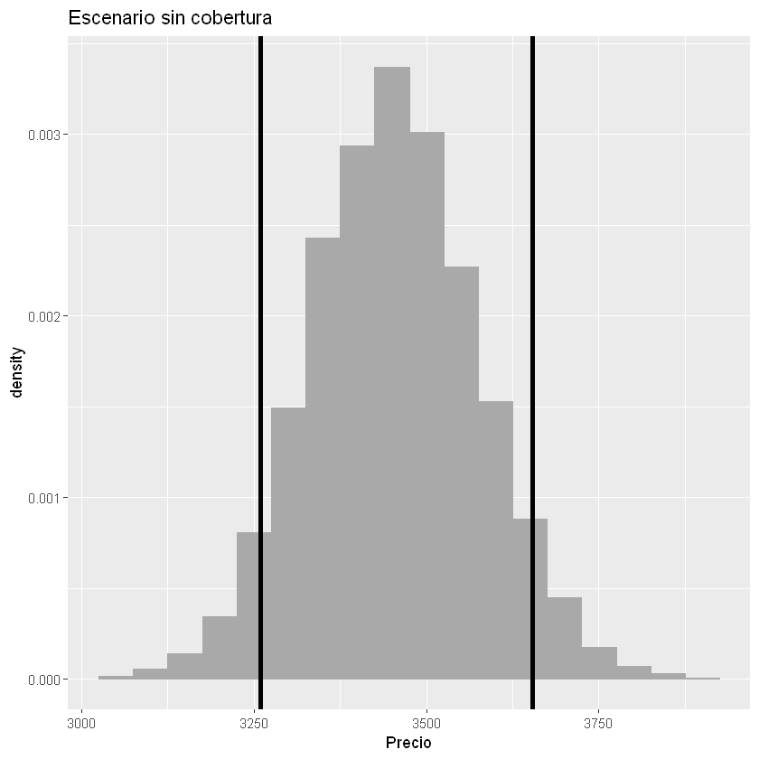
2. Escenario con cobertura: Call¶
Valor esperado¶
mean(resultados[,"Cobertura Call"])
Percentil del 5% y 95%¶
quantile(resultados[,"Cobertura Call"], c(0.05, 0.95))
- 5%
- 3309.10077092958
- 95%
- 3450.03541647308
Desviación estándar¶
sd(resultados[,"Cobertura Call"])
ggplot(data = resultados, aes(resultados[,"Cobertura Call"]))+
geom_histogram(aes(y=..density..),binwidth = 50, colour = "darkgray", fill = "darkgray")+
geom_vline(xintercept = quantile(resultados[,"Cobertura Call"], c(0.05, 0.95)), colour="darkgreen", size=1.5)+
labs(title = "Escenario cobertura Call", x = "Precio")
{kind=link}
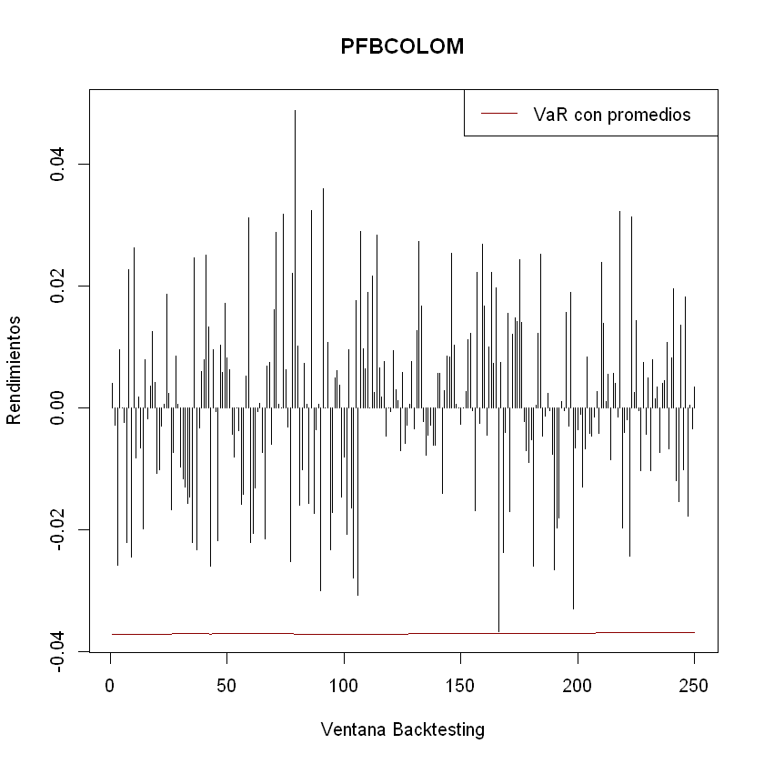
3. Escenario con cobertura: Spread Comprador¶
Valor esperado¶
mean(resultados[,"Cobertura Spread Comprador"])
Percentil del 5% y 95%¶
quantile(resultados[,"Cobertura Spread Comprador"], c(0.05, 0.95))
- 5%
- 3259.0653544565
- 95%
- 3603.75953422285
Desviación estándar¶
sd(resultados[,"Cobertura Spread Comprador"])
ggplot(data = resultados, aes(resultados[,"Cobertura Spread Comprador"]))+
geom_histogram(aes(y=..density..),binwidth = 50, colour = "darkgray", fill = "darkgray")+
geom_vline(xintercept = quantile(resultados[,"Cobertura Spread Comprador"], c(0.05, 0.95)), colour="darkblue", size=1.5)+
labs(title = "Escenario cobertura Spread Comprador", x = "Precio")
{kind=link}
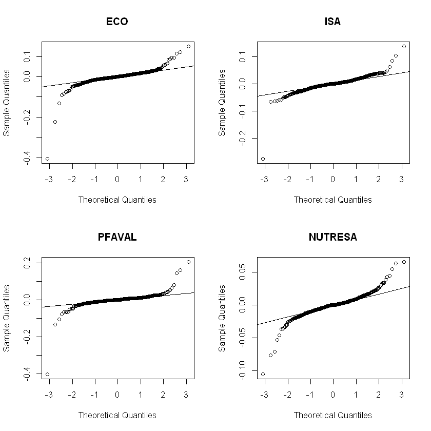
Sin cobertura, cobertura Call y cobertura Spread Comprador¶
ggplot(data = resultados, aes(resultados[,"Sin cobertura"]))+
geom_histogram(aes(y=..density..),binwidth = 50, colour = "darkgray", fill = "darkgray")+
geom_vline(xintercept = quantile(resultados[,"Sin cobertura"], c(0.05, 0.95)), colour="black", size=1.5)+
geom_vline(xintercept = quantile(resultados[,"Cobertura Call"],c(0.05, 0.95)), colour="darkgreen", size=1.5)+
geom_vline(xintercept = quantile(resultados[,"Cobertura Spread Comprador"],c(0.05, 0.95)), colour="darkblue", size=1.5)+
labs(x = "Precio")

4. Escenario con cobertura: Put¶
Valor esperado¶
mean(resultados[,"Cobertura Put"])
Percentil del 5% y 95%¶
quantile(resultados[,"Cobertura Put"], c(0.05, 0.95))
- 5%
- 3355.42943814151
- 95%
- 3609.18897236437
Desviación estándar¶
sd(resultados[,"Cobertura Put"])
ggplot(data = resultados, aes(resultados[,"Cobertura Put"]))+
geom_histogram(aes(y=..density..),binwidth = 50, colour = "darkgray", fill = "darkgray")+
geom_vline(xintercept = quantile(resultados[,"Cobertura Put"], c(0.05, 0.95)), colour="darkgreen", size=1.5)+
labs(title = "Escenario cobertura Put", x = "Precio")
{kind=link}
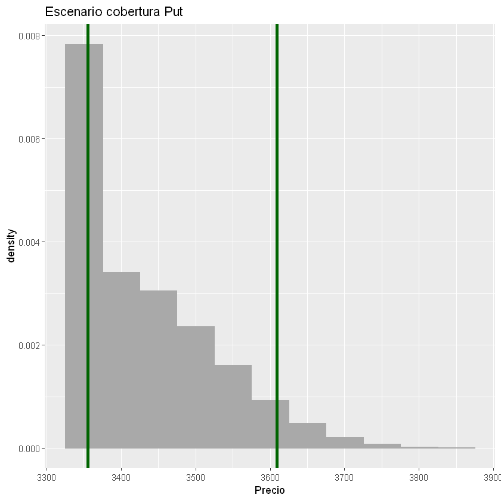
5. Escenario con cobertura: Spread Vendedor¶
Valor esperado¶
mean(resultados[,"Cobertura Spread Vendedor"])
Percentil del 5% y 95%¶
quantile(resultados[,"Cobertura Spread Vendedor"], c(0.05, 0.95))
- 5%
- 3309.0653544565
- 95%
- 3653.75953422285
Desviación estándar¶
sd(resultados[,"Cobertura Spread Vendedor"])
ggplot(data = resultados, aes(resultados[,"Cobertura Spread Vendedor"]))+
geom_histogram(aes(y=..density..),binwidth = 50, colour = "darkgray", fill = "darkgray")+
geom_vline(xintercept = quantile(resultados[,"Cobertura Spread Vendedor"], c(0.05, 0.95)), colour="darkblue", size=1.5)+
labs(title = "Escenario cobertura Spread Vendedor", x = "Precio")
{kind=link}
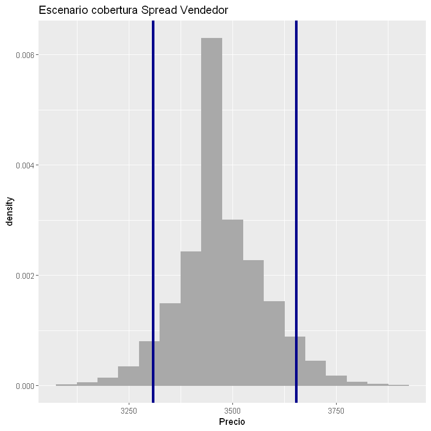
Sin cobertura, cobertura Put y cobertura Spread Vendedor¶
ggplot(data = resultados, aes(resultados[,"Sin cobertura"]))+
geom_histogram(aes(y=..density..),binwidth = 50, colour = "darkgray", fill = "darkgray")+
geom_vline(xintercept = quantile(resultados[,"Sin cobertura"], c(0.05, 0.95)), colour="black", size=1.5)+
geom_vline(xintercept = quantile(resultados[,"Cobertura Put"], c(0.05, 0.95)), colour="darkgreen", size=1.5)+
geom_vline(xintercept = quantile(resultados[,"Cobertura Spread Vendedor"], c(0.05, 0.95)), colour="darkblue", size=1.5)+
labs(x = "Precio")
{kind=link}
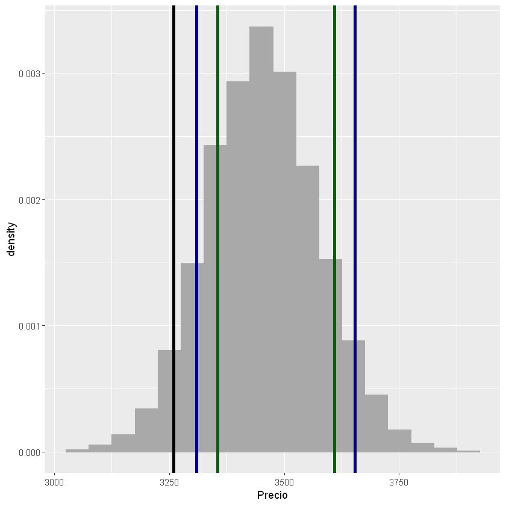
Sin cobertura, cobertura Call y cobertura Spread Comprador¶
ggplot(resultados, aes(resultados[,"Sin cobertura"])) + geom_histogram(binwidth = 50, alpha = 0.5, colour = "darkgray", fill = "darkgray")+
geom_histogram(aes(resultados[,"Cobertura Call"]), alpha = 0.3, binwidth = 50, colour = "darkgreen", fill = "darkgreen")+
geom_histogram(aes(resultados[,"Cobertura Spread Comprador"]), alpha = 0.3, binwidth = 50, colour = "darkblue", fill = "darkblue")+
labs(title = "Histogramas", x = "Precio", y = "Frecuencia")
{kind=link}
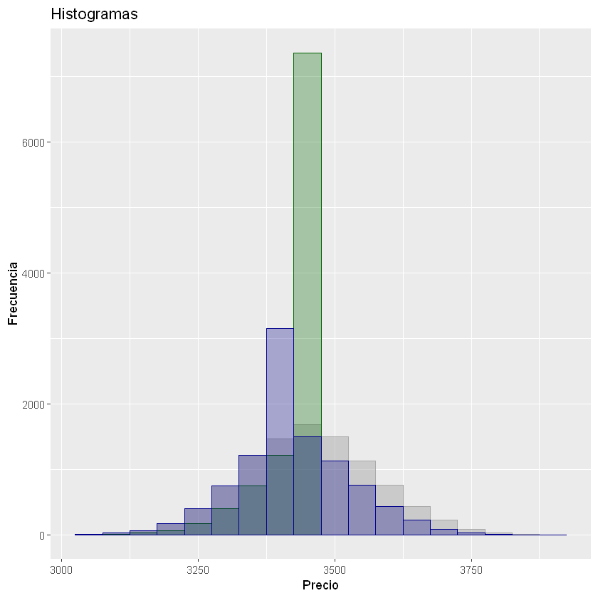
Sin cobertura, cobertura Put y cobertura Spread Vendedor¶
ggplot(resultados, aes(resultados[,"Sin cobertura"])) + geom_histogram(binwidth = 50, alpha = 0.5, colour = "darkgray", fill = "darkgray")+
geom_histogram(aes(resultados[,"Cobertura Put"]), alpha = 0.3, binwidth = 50, colour = "darkgreen", fill = "darkgreen")+
geom_histogram(aes(resultados[,"Cobertura Spread Vendedor"]), alpha = 0.3, binwidth = 50, colour = "darkblue", fill = "darkblue")+
labs(title = "Histogramas", x = "Precio", y = "Frecuencia")
{kind=link}
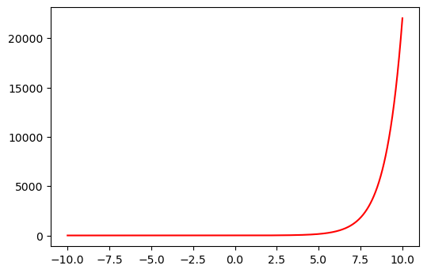